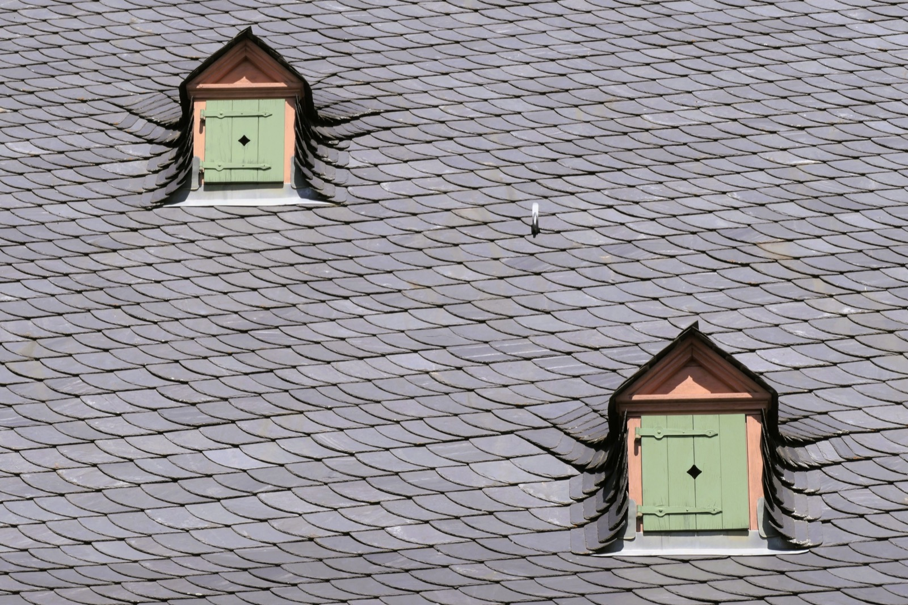

Roofing Materials for Tropical Homes
Metal, tile, concrete, tin, or shingles? A builder's guide to every roof type, what each costs, how long it lasts, and which ones hold up to tropical heat, driving rain, salt air, and hurricanes.

A roof in Vermont mostly has to keep the rain out and the snow from piling up. A roof in Panama has a harder job. It blocks fierce equatorial sun, sheds rain that falls by the inch, resists salt air near the coast, holds on through hurricane-season wind, and, if you choose well, keeps the house cool enough that you aren't paying to air-condition against a roof that spent all day soaking up heat. Pick the wrong material here and you don't get a cosmetic problem. You get a leak, a mold streak, a cooling bill, or a roof peeled off in a storm. This is a builder's plain-language guide to the options: what each roof is, what it costs, how long it lasts, and how it behaves where we build.
At a glance
- Standing-seam metal is the best all-round tropical roof: 40 to 70 years, sheds rain fast, and it can be engineered for hurricane uplift.
- Clay and concrete tile last longest at 50 years or more, and stay coolest, but they are heavy and need a structure designed for the load.
- A concrete slab is the most hurricane-proof option and gives you a terrace, at the cost of a waterproof membrane you must recoat on a schedule.
- Corrugated tin is cheap and everywhere, and it is loud, hot and short-lived. It is a budget decision, not a performance one.
- Asphalt shingles are the one to avoid. UV, heat and humidity destroy them far faster here than in North America, and the warranty assumes a temperate climate.
- Fasteners and flashing fail before roofing does. Specify stainless or coated fixings near salt air, whatever material you choose.
The four things a tropical roof fights
Up north a roof battles cold and snow. Here the enemies are different. Heat and UV bake materials and radiate warmth down into the rooms. Water arrives fast and heavy, so a roof has to throw it off and never hold it. Salt air near the coast eats at metal fixings and finishes. And wind pulls at every edge and fastener during storm season. The roofs that win here reflect heat, drain instantly, resist corrosion, and stay anchored. Each material trades those strengths against price and looks in its own way.
Every material, side by side
The honest headline: there's no single best roof, only the best roof for your site, your budget, and how long you plan to own the place. Here's the whole menu at a glance.
| Material | Rough cost | Lifespan | Tropical fit | Best for |
|---|---|---|---|---|
| Metal roofing (standing seam) | $$–$$$ | 40–70 yr | 🟢 Excellent | Durability, heat reflection, hurricanes |
| Tin / corrugated metal | $ | 15–40 yr | 🟡 Good, done right | Low cost, fast, sheds rain |
| Clay & concrete tile | $$–$$$ | 50–100 yr | 🟢 Excellent | Heat, looks, longevity |
| Concrete flat roof (losa) | $$$ | 50+ yr | 🟢 Strong | Storms, roof terraces, permanence |
| Asphalt shingles | $ | 12–25 yr | 🔴 Weak | Low upfront cost only |
One number reframes the whole comparison: cost per year of service. A metal roof at $45/m² lasting 55 years costs about $0.82 per m² per year. An asphalt roof at $22/m² lasting 11 years costs $2.00, more than twice as much, and you pay the labour to strip and replace it two or three times along the way. The cheapest roof to buy is rarely the cheapest roof to own.
The two that lead: metal and tile
If you want a roof still doing its job in forty years, two materials pull ahead here. Standing-seam metal reflects the sun, sheds rain in seconds, carries the strongest hurricane ratings, and runs 40 to 70 years. Its trick is a hidden fastener, so there are no exposed screw holes to leak or work loose. Clay and concrete tile is the classic colonial roof for good reason: the overlapping tiles leave a ventilated air gap that carries heat away, the tiles themselves never rust or rot, and a good one outlives the mortgage. The price you pay for tile is weight, which the structure has to be built for.

The regional workhorses: tin and concrete slab
Two more materials cover most of what's on Latin American homes. Tin, or corrugated metal, is the affordable default across the region. It's cheap, quick, and it sheds tropical rain beautifully. Spec it with insulation and a coastal-grade coating and it's a good roof; skimp and it's hot and rust-prone. The concrete flat roof, the losa, is a poured reinforced slab, the same concrete as the walls. It's permanent, close to hurricane-proof, and it doubles as a terrace or the floor of a future second storey. Its whole game is waterproofing and drainage.
The one to think twice about: asphalt shingles
Asphalt shingles cover most North American roofs because they're cheap and any crew can lay them fast. Here they usually don't belong. Sun and heat cook them, so they age faster than their already-short 12-to-25-year life. Constant humidity grows algae across them. And of every roof on this list, they're the likeliest to lift or tear in a hurricane. They have exactly one advantage, lowest upfront price, and in a climate this rough that's rarely the number that decides.

A quick way to choose
Start from your hard constraint and work back:
- Longest life and best all-round tropical performance: standing-seam metal or tile.
- Lowest upfront cost, need it now: tin/corrugated (spec insulation and a coastal coating).
- Hurricane country, maximum peace of mind: standing-seam metal or a concrete slab.
- Coolest interior without huge AC bills: tile's ventilated gap, or reflective metal plus insulation.
- Want a roof terrace or more living space: the concrete flat roof.
- Classic colonial or Mediterranean look: clay or concrete tile.
- Tightest budget, short-term hold: asphalt shingles, knowing the trade-offs.
Where SORA lands
We build for permanence in a punishing climate, so our defaults are the materials that win over decades: standing-seam metal and concrete, either slab or tile, both anchored and detailed for hurricane wind and driving rain, and insulated so the roof keeps the house cool instead of cooking it. Where budget rules we'll do tin, and do it properly. We'll steer you off asphalt shingles unless there's a specific reason for them. The roof isn't the place to shave a few dollars in the tropics. It's the part of the house that decides whether everything under it stays dry, cool, and standing. For how the roof fits the whole budget, see our 2026 cost-to-build breakdown.
Speccing a roof for a build in Panama or Costa Rica?
We design and build fixed-price homes for foreign buyers, and the roof is one of the first things we get right for the climate: sun, driving rain, salt air, and wind. Tell us your site and we'll tell you the roof that fits it.
See 2026 build costs →Frequently asked questions
What is the best roofing material for a hot, tropical climate?
Standing-seam metal and clay or concrete tile lead for a permanent tropical home. Metal reflects solar heat, sheds heavy rain, resists hurricanes, and lasts 40 to 70 years. Tile leaves a ventilated air gap that keeps interiors cool and can last 50 to 100 years. Both outperform asphalt shingles, which tropical UV, humidity, and wind punish.
What is the best roof for a hurricane zone?
Standing-seam metal with concealed fasteners and proper edge anchoring, and monolithic reinforced-concrete slabs, carry the strongest wind performance. Well-installed concrete tile also holds up. In any hurricane roof the fastening and edge detailing matter as much as the material, so how it's attached is as important as what it's made of.
Which roof material lasts the longest?
Clay and concrete tile can last 50 to 100 years, and reinforced-concrete slabs 50 or more, so they lead on longevity. Standing-seam metal runs 40 to 70 years. Asphalt shingles are the shortest at 12 to 25 years, and less than that under strong tropical sun.
Are metal roofs noisy in the rain?
Less than most people expect. Over a solid deck with insulation, which is how a quality metal roof goes on a house, rain noise is modest. The loud drumming people remember comes from bare corrugated tin over open framing with nothing underneath it, which is a construction choice rather than a property of metal.
Sources & verification
Figures in this guide were checked against primary and authoritative sources on 27 July 2026. Immigration, tax, and cost figures change. Always confirm the current rules with the official body or a licensed professional before acting.
- Bob Vila: roofing materials, lifespans & costs
- Forbes Home: roof materials cost & durability
- FEMA Building Science, roof performance in high-wind events